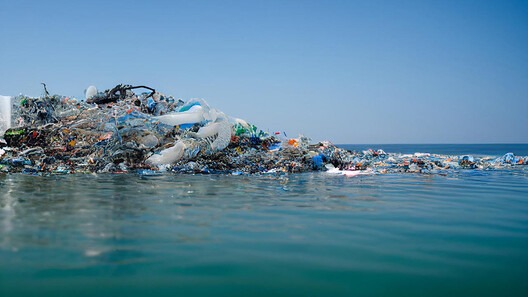
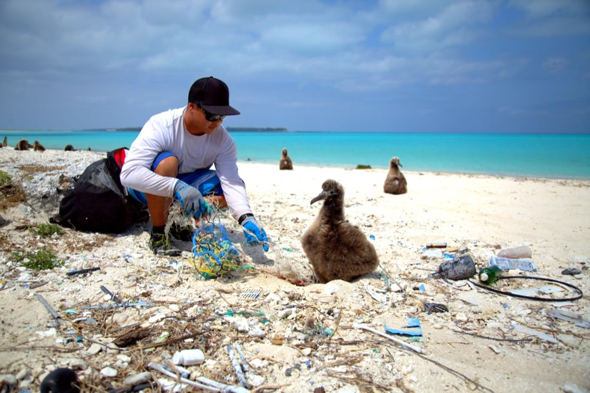
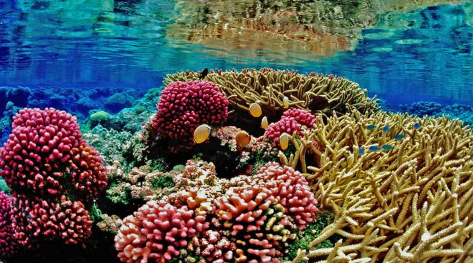
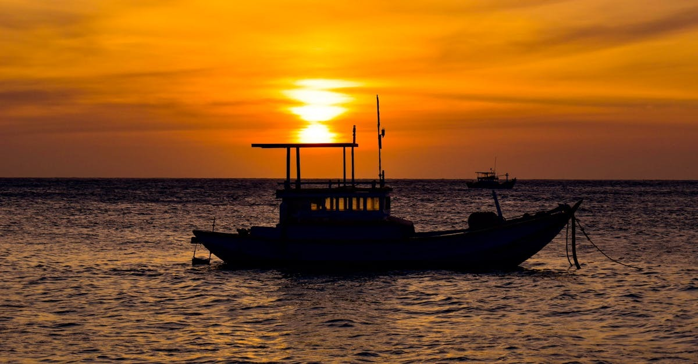

The Ocean Crisis
The ocean is the lifeblood of our planet. Covering more than 70% of Earth's surface, it generates over half the oxygen we breathe, absorbs around 30% of all carbon dioxide produced by human activity, and regulates the global climate.

Plastic pollution has reached every corner of the ocean.
Plastic Pollution: The Invisible Flood
Every year, an estimated 8 to 12 million tonnes of plastic waste enters the ocean -the equivalent of dumping a rubbish truck full of plastic into the sea every single minute.
Tonnes of plastic entering the ocean every year.
What drives plastic pollution?
- Single-use packaging used once and discarded
- Inadequate waste management in coastal nations
- "Ghost gear" -abandoned fishing equipment

Ghost gear -abandoned or lost fishing nets -traps and kills marine wildlife globally.
Ocean Acidification: The Silent Emergency
The ocean absorbs approximately 25–30% of all CO₂ emitted by human industrial activity. This acidification dissolves the calcium carbonate shells of oysters, corals, and marine life.
Overfishing: Emptying the Sea
Today, the United Nations Food and Agriculture Organisation estimates that over 34% of global fish stocks are harvested at biologically unsustainable levels.
Sea Level Rise: Coastlines Under Threat
Global mean sea levels have risen by approximately 20cm since 1900, and the rate of rise is accelerating due to melting ice sheets.

Healthy coral reefs support an estimated 25% of all marine species, yet are under severe threat from warming and acidifying oceans.
Taking Action: What Each of Us Can Do
The scale of the ocean crisis can feel overwhelming -but human action can reverse the damage. Marine ecosystems are highly resilient when given the opportunity to recover.
As an Individual
- Refuse single-use plastic
- Buy MSC-certified sustainable seafood
- Reduce your carbon footprint

Sustainable fishing practices are essential to preserve ocean ecosystems and the livelihoods that depend on them.